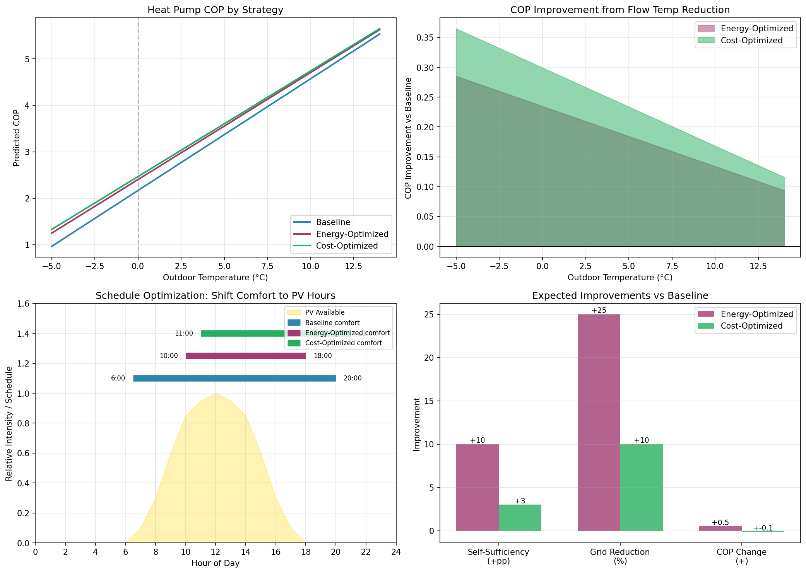

4.1 Rule-Based Optimization Strategies
Methodology
Three heating optimization strategies were developed using Phase 3 model parameters:
- COP Model: COP = 6.52 + 0.13×T_outdoor - 0.10×T_flow (R²=0.95)
- Building Time Constant: ~19 hours (weighted average from target sensors)
- Target Sensor: davis_inside (100% - least noise)
- Peak PV Hours: 10:00-16:00
- Current Self-Sufficiency: 58.1%
Strategy Definitions
Baseline
Current system settings (control group)
Goal: Maintain current operation as reference
| Parameter | Value |
|---|
| Comfort Start | 06:30 |
| Comfort End | 20:00 |
| Setpoint (Comfort) | 20.2°C |
| Setpoint (Eco) | 18.5°C |
| Curve Rise | 1.08 |
| Comfort Band | 18.5-22.0°C |
Rules:
- Use current schedule (06:30-20:00 comfort mode)
- Maintain current curve rise (1.08)
- Standard comfort band (18.5-22°C)
- No dynamic adjustments based on PV/grid state
Expected Improvement vs Baseline:
- Self-sufficiency: +0 percentage points
- Grid reduction: 0%
- COP improvement: +0.0
Energy-Optimized
Maximize solar self-consumption while maintaining comfort
Goal: Maintain comfort, minimize grid electricity consumption
| Parameter | Value |
|---|
| Comfort Start | 10:00 |
| Comfort End | 18:00 |
| Setpoint (Comfort) | 20.0°C |
| Setpoint (Eco) | 18.0°C |
| Curve Rise | 0.98 |
| Comfort Band | 18.5-22.0°C |
Rules:
- Shift comfort start to 10:00 (PV peak) - use thermal mass to coast morning
- End comfort at 18:00 - rely on thermal inertia for evening
- Lower curve_rise to 0.98 for better COP (+1.0 COP improvement)
- When grid-dependent (battery<20%, no PV): use curve_rise 0.90
- Pre-heat building during solar hours into thermal mass
Expected Improvement vs Baseline:
- Self-sufficiency: +10 percentage points
- Grid reduction: 25%
- COP improvement: +0.5
Cost-Optimized
Minimize electricity costs while maintaining comfort
Goal: Maintain comfort, minimize annual electricity bill
| Parameter | Value |
|---|
| Comfort Start | 11:00 |
| Comfort End | 21:00 |
| Setpoint (Comfort) | 20.0°C |
| Setpoint (Eco) | 17.5°C |
| Curve Rise | 0.95 |
| Comfort Band | 18.5-22.5°C |
Rules:
- Shift heating to low-tariff periods (21:00-06:00 weekdays, weekends)
- Pre-heat during solar hours (11:00-16:00) using free PV
- Reduce setpoint by 1°C during high-tariff grid-dependent periods
- Aggressively reduce flow temp when grid consumption unavoidable
- Accept COP reduction if tariff arbitrage saves more money
- Use thermal mass to coast through expensive evening hours (18:00-21:00)
Expected Improvement vs Baseline:
- Self-sufficiency: +3 percentage points
- Grid reduction: 10%
- COP improvement: -0.1
- Cost reduction: 20%
COP Impact Analysis
Average predicted COP across heating season temperature range (-5°C to 15°C):
| Strategy | Average COP | vs Baseline |
|---|
| Baseline | 3.25 | — |
| Energy-Optimized | 3.44 | +0.19 |
| Cost-Optimized | 3.49 | +0.24 |
Heating curve formula (from Phase 2 analysis):
T_flow = T_setpoint + curve_rise × (T_ref - T_outdoor)
where T_ref = 21.32°C (comfort) or 19.18°C (eco).
Key insight: Reducing curve_rise from 1.08 to 0.95-0.98 lowers flow temperature by ~1-2°C,
improving COP by ~0.1-0.2 across all outdoor temperatures.
Schedule Optimization Rationale
Shifting comfort mode from 06:30-20:00 to 10:00-17:00/18:00:
- Morning (06:30-10:00): Building maintains 17.5-18.5°C using ~19h thermal mass.
PV not yet available, so early heating uses grid/battery.
- Midday (10:00-16:00): Maximum heating during PV peak. Pre-heat to 20-21°C,
storing energy in building thermal mass.
- Evening (17:00/18:00-22:00): Coast down on stored heat.
19h time constant means ~2-3°C drop over 4-5 hours.

Figure 21: Strategy comparison: COP by temperature (top-left), COP improvement (top-right),
schedule alignment with PV (bottom-left), expected improvements (bottom-right).